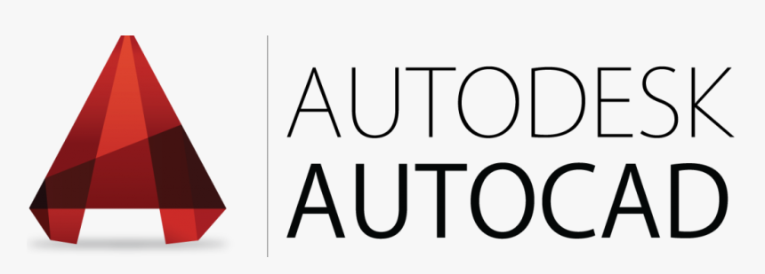
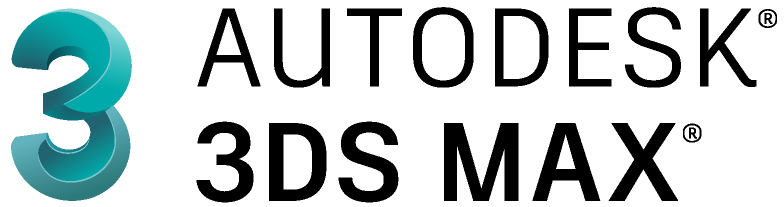

AutoDesk AutoCad 2D
Programa de diseño arquitectonico, mecanico, civil, etc. en la cual puedes trabajar tanto bidimensional como tridimencional.

AutoDesk Revit Architecture
Programa para diseño, y visualizacion de planos tanto en tridimensional como bidimensional, con facilidad de sacar computos metricos y ciertas caracteristicas propias del diseño.

AutoDesk 3DMax Studio Architecture
Programa para diseños en tridimensional, en el cual se puede generar piezas, mobiliario, espacios, y demas objetos, con una calidad y un detalle maximo.